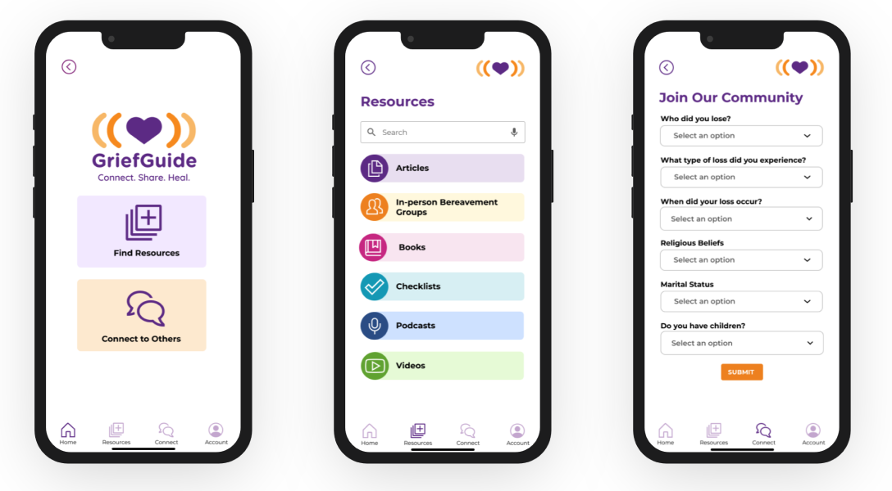

This team project was created for the UX/UI Design Bootcamp at George Washington University. Our job was to research, prototype, test, and validate an idea for a brand-new mobile application that solves a real, clearly identified need in users’ everyday lives.
Drawing on my personal experience as a young widow, I pitched the idea of a social app that could help people who have lost a loved one connect with other people who have experienced a similar loss. This was a passion project that I look forward to developing further.
UX Research
UX Design
Jalisa Keyser
Karen Klinedinst
Rachel Manu
Overall: 4 weeks
Research: 2 weeks
Design: 2 weeks
Miro
Figma
Grief is a normal response to losing a loved one. Yet, too often it’s difficult to find a safe space to connect and share grief with others who are experiencing a similar loss.
GriefGuide is a social app that helps those experiencing grief and loss connect to others who are experiencing a similar loss through moderated chat groups, and resources such as: helpful checklists, books, articles, podcasts, videos and links to in-person bereavement groups. GriefGuide is a safe space to connect, share and heal.
We posted a 16 question survey via Google Docs that on various social media platforms, such as our personal pages, instagram, LinkedIn, and grief and loss Facebook groups. We received 80 responses from those who have suffered through different losses, including but not limited to the loss of a spouse, sibling, parent, or child.
During the research phase of the project, we conducted user interviews to build our persona and to inform the design. We prepared an interview script with 23 open-ended questions, focusing on our target audiences’ experiences with grief and loss. In seven days, we recruited and interviewed five users remotely. We referenced the user interview findings throughout the entire design process.
Between the survey data and the interviews, it was concluded that most people would find a social app geared towards overcoming grief as helpful.

We wanted to form a deeper understanding of our users' goals, needs, experiences, and behaviors. Based on user interviews and surveys, we created our user persona Allison, who is looking for support as she navigates her new life following the loss of her husband.
We looked at four competitors (Grief Share, Grief Refuge, Empathy Loss Support and Good Grief) to review their features, strengths, and weaknesses.
Of the three apps and one website that we analyzed, Good Grief was the closest competitor to our app. Good Grief’s primary feature is one-on-one chat with other members.Based on reviews, some users have complained that Good Grief's chat feature can be misused.
To protect our users, we decided that GriefGuide would use moderated group chats rather than one-on-one.
From insights gained from our competitor analysis we created our user flow. People using this app are in a vulnerable place in their life so creating a safe space to share is a big concern and feature of GriefGuide.
Using Figma, we translated our first sketches into low-fidelity wireframes.
The onboarding process includes a basic profile to access the Resource feature. The Resource feature would include articles, books, search/links to in-person bereavement groups, helpful checklists, podcasts and videos. A user would fill out a questionnaire to access the Moderated Chat feature, following a 24-48 hour approval process by the chat monitor.
Each member of a moderated group would be required to read and understand GriefGuide's community standards before gaining entry into the group chat. Keeping our members safe is our utmost priority.
We then tested our wireframes with three users. Based on feedback from user testing, we added a Home icon and labels to the feature icons in the bottom navigation, moved the back button to the top of the screen, and improved the functionality of the questionnaire.
This project quickly became a passion project for our team as death and grieving is a universal experience to every human. It was a special and fulfilling project to undertake that we all felt deeply.